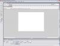
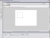

Alors, tout d'abord, il vous faut Macromedia Flash. Il est disponible en licence 30 jours ici. Inscrivez-vous, confirmez par mail votre inscription, téléchargez-le, installez-le, ouvrez-le.
Quand une fenêtre vous demandera :
Citation : Fenetre
Voulez-vous essayer Flash ou entrer une numéro de série ?
Vous mettrez "Essayer Flash pendant 30 jours".
Vous tombez sur une grande fenêtre, avec une plus petite à l'intérieur. Allez dans la rubrique Créer, puis cliquez sur le lien Document Flash.
Et, tadaaa ! Vous êtes dans Flash :magicien: ! En théorie, et suivant votre version, ça devrait ressembler à ça (cliquez pour agrandir un peu) :
Il faut déjà savoir que tous les clips que vous créerez seront stockés dans la bibliothèque (pas celle de la ville, hein :p ). Celle que Flash met à notre disposition.
Pour une occurrence :
Citation : Aide de Flash
Une occurrence est une copie d'un symbole situé sur la scène ou imbriqué dans un autre symbole. Une occurrence peut avoir une couleur, une taille et une fonction différentes de celles de son symbole. La manipulation d'un symbole met toutes ses occurrences à jour, mais l'application d'effets sur une occurrence de symbole ne met à jour que cette occurrence.
Bon, allez, nous allons enfin introduire notre bonhomme :) .
Bon, si vous n'avez pas d'image représentant d'un personnage, il y a deux solutions :
vous en faites une (image) ;
vous faites un truc tout simple pour tester.
Créons un petit carré :) .
À droite, vous avez l'outil Carré. Cliquez dessus, puis faites un cliquer-déplacer sur le carré blanc au milieu pour tracer notre petit carré.
Hop ! un screen :  (Comme d'habitude, on clique dessus pour agrandir) Faites un carré plus petit que le mien, s'il vous plaît.
Dans le panneau de gauche, section Couleurs, vous avez deux carrés de couleur :
le premier carré, signalé par un petit crayon, correspond au contour du carré ;
le deuxième, signalé par un pot de peinture, correspond au fond du carré.
Cliquez sur chacun d'eux pour modifier les valeurs, et sélectionnez la couleur de votre choix. Je dirais... noir pour le contour, et bleu pour le fond.
Voilà, vous avez un carré. Maintenant, tracez un cadre de sélection tout autour.
Une fois le carré sélectionné, il est normal qu'il soit bizarre, plus clair, et avec ses côtés plus foncés.
Une fois votre carré ou votre personnage sélectionné, pressez F8. Un petite fenêtre s'ouvre :) .
Donnez un nom à votre carré, ce sera son nom de clip. En dessous, sélectionnez Clip ! Pour ce tutoriel, nous l'appellerons bonhomme, mais son nom n'a aucune influence :) .
En bas de votre fenêtre, vous avez un panneau Propriétés, et une flèche à côté. Cliquez sur la flèche pour faire disparaître le panneau :) .
Ensuite, cliquez sur la flèche près de Actions. Cela ouvre un truc tout blanc :p . Cette fenêtre est séparée en deux, des fonctions préconstruites pour les débutants, et le champ texte blanc. On ne veut pas de fonctions préconstruites, donc, on clique sur la flèche de la barre de séparation.
Ensuite, nous allons maintenant faire du code, et plus précisément de l'ActionScript pour faire bouger votre personnage :) .
Dans le blanc, tapez ou copiez-collez cette ligne :
this.perso.onEnterFrame = function(){
C'est quoi, ce truc avec des point et des =)({ partout ?
C'est de l'ActionScript. Allez, hop, petite explication :)
this le clip parent à l'objet, c'est-à-dire l'image dans laquelle nous avons mis notre perso ;
perso est le nom de votre occurrence :) ;
onEnterFrame = function() dit à Flash d'exécuter ce qu'il y aura après à chaque image, 12 fois par seconde pour un fichier Flash classique :) ;
{ sert à dire : "à partir de là".
Ensuite, ceci :
if (Key.isDown(Key.UP)){
this._y -= 5;
}
else if (Key.isDown(Key.DOWN)){
this._y += 5;
}
else if (Key.isDown(Key.LEFT)){
this._x -= 5;
}
else if (Key.isDown(Key.RIGHT)){
this._x += 5;
}
Argh, tu veux nous tuer à balancer un énorme bout de code comme ça ?
Mais non. ^^ C'est juste que ce p'tit bout de code est lié :) .
Alors hop, on explique.
if(...){ sert à dire : "si (c'est ça){ alors fait ça }" ;
Key.isDown(...) si on appuie sur une touche ;
Key.UP la flèche qui va en haut, à côté du pavé numérique :) ;
Key.DOWN la flèche qui va en bas, encore à côté du pavé numérique :) ;
Key.RIGHT la flèche qui va à droite, toujours à côté du pavé numérique :) ;
Key.LEFT la flèche qui va à gauche, devinez à côté de quoi ^^ ?
this.perso._x += 5;
Selon l'avis d'un expert, this, ici, désigne l'occurrence perso car le bloc de code est lié à l'événement onEnterFrame du clip perso (encore selon un expert ^^ ) ;
._x ou ._y sont les coordonnées de notre occurrence. :) Elle partent du point 0 0 en haut à gauche ;
+= ou -= sert à retirer ou à ajouter à un nombre. Ici, à._x. <puce>5 définit le nombre de pixels qui se déplacera à chaque déplacement.
Et, pour finir :
stop(); // Sinon notre image va clignoter... et on fait un bonhomme, pas un sapin de noël.
} // Sert à dire : Jusque-là (rappelez-vous, plus haut on avait dit : à partir de là ^_^ ).
On lance l'animation grâce à Contrôle => Tester l'animation ou le raccourci Ctrl + Entrée.
On voit notre bonhomme, rien d'autre, touchez aux flèches, il bouge :) . Géniiaal !
Et voilà, vous avez appris les bases de Flash, de l'ActionScript, et tout et tout sans problème :) (enfin, je l'espère).
Allez, je vous laisse :) .
Blue112 - La 112e ombre bleue. Toute faute => problème => incompréhension => demande d'ajout => par Message Privé ;) .
{kind=link}
{kind=link}
{kind=link}